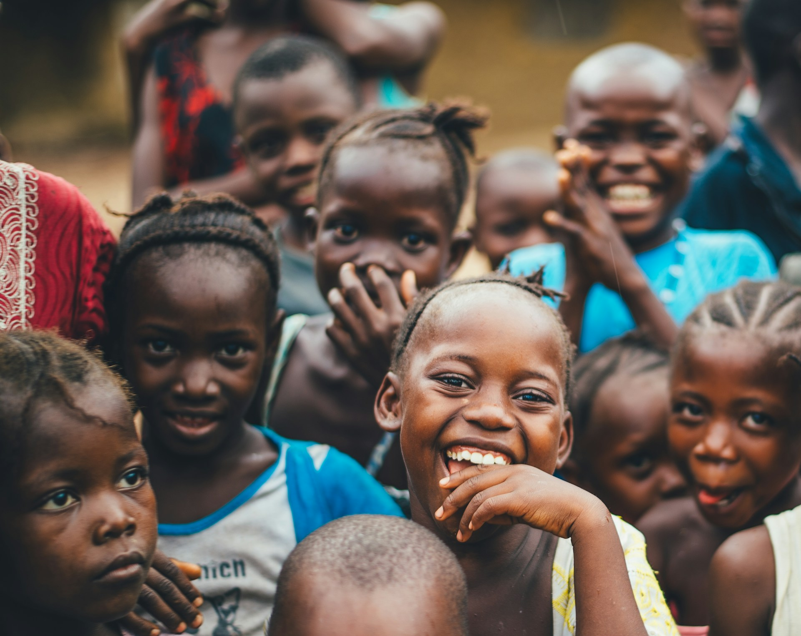
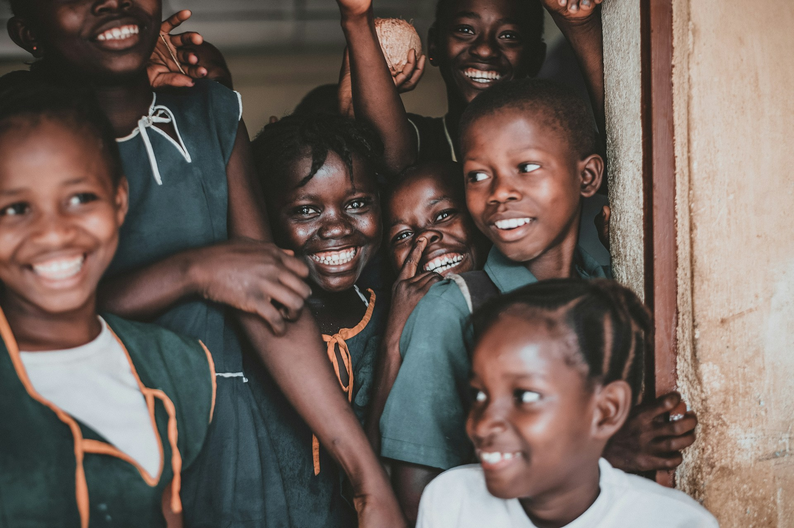
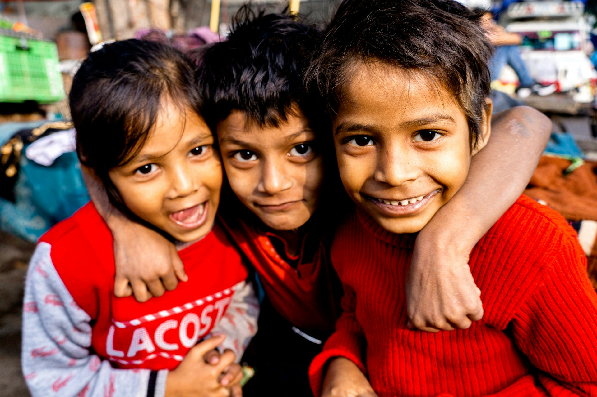
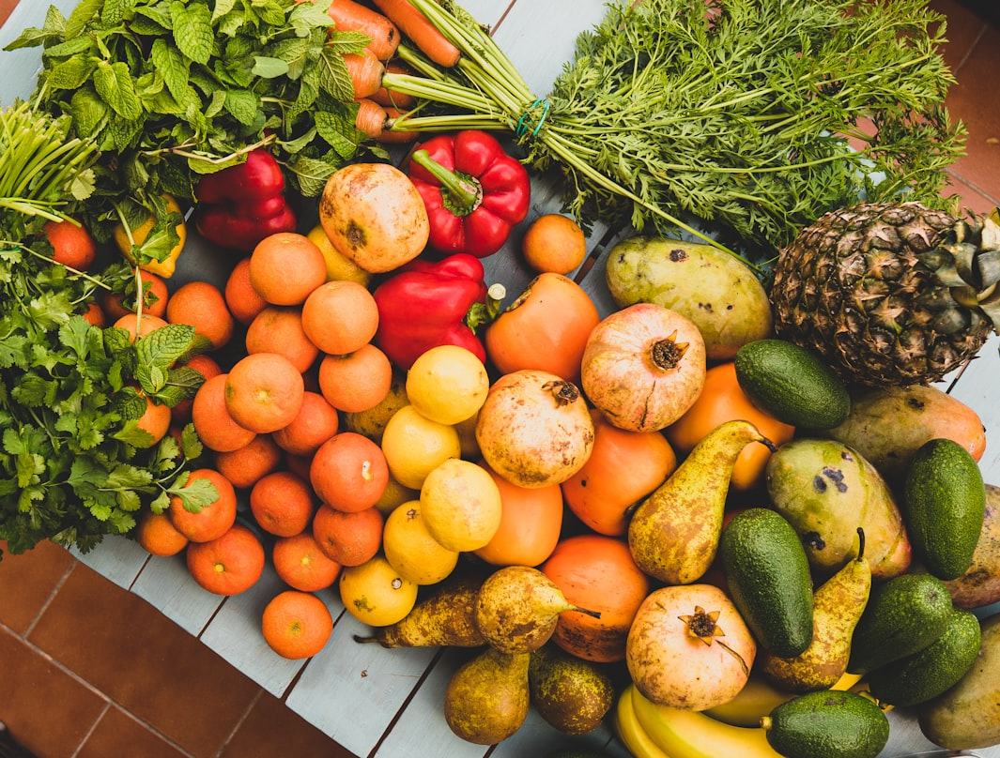
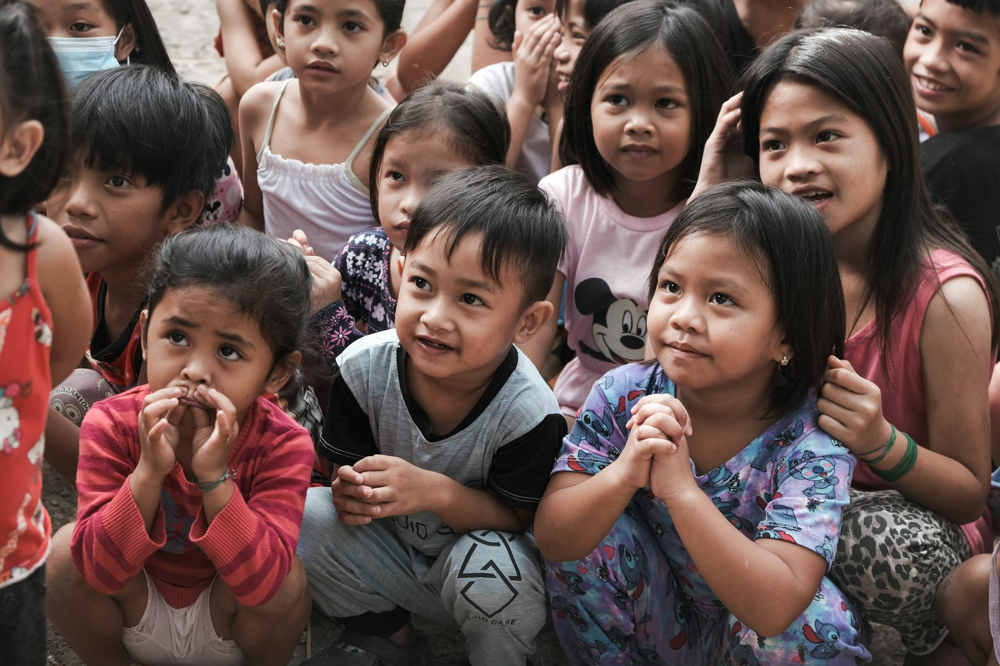

Plain-language needs
Explain what a community needs, who coordinates the response, and how supporters can evaluate the next step.
Humanitarian relief with transparent next steps
Kindario helps supporters understand urgent needs, choose practical ways to help, and follow field-informed updates without pressure or guesswork.

01 / Trust
Kindario is designed around clarity before commitment. Visitors can understand the mission, review support paths, and decide how to help without exaggerated claims.
Explain what a community needs, who coordinates the response, and how supporters can evaluate the next step.

Share context without reducing people to crisis, poverty, or one-dimensional need.
Let people show interest, plan support, and join volunteer pathways through clear next steps.

02 / Support model
Kindario frames each support path around a simple operating loop: listen to local needs, coordinate with trusted people, supply practical help, and share updates responsibly.
Start with community context, not campaign noise.
Route support through people who understand the ground reality.
Explain what changed, what remains open, and how supporters can stay involved.
03 / Impact areas
These focus areas show how a humanitarian site can group support without inventing financial progress or operational claims.

Help communities present essential food needs with context, dignity, and clear involvement options.
Explore this path
Frame child and family support with respect, context, and practical next steps.
Read the story
Show how in-kind support, community groups, and local supply coordination can work together.
Mobilize a group04 / Ways to help
Kindario keeps support decisions clear and practical. Visitors can learn first, plan support, or offer time without being rushed into a transaction.
05 / Field notes
Field notes help visitors understand the context behind support work: what people asked for, what local leaders prioritized, and how the next step was chosen.
Families requested reliable food support during a school break.
Local coordinators grouped food, learning supplies, and follow-up visits.
Supporters are invited to help fund supplies or mobilize a group.

06 / Volunteer and partner
Kindario gives different supporters a clear way to begin, from individual volunteering to school, company, and community group involvement.
Pack supplies, coordinate drop-off lists, and help local teams prepare practical distribution routes.
Choose logistics
Bring a school, faith community, workplace, or local group into a focused support effort.
Start with a groupUse the page to invite careful partnerships without implying a formal program already exists.
Find contact paths07 / Next act
The strongest support starts with attention. Learn the need, choose a role, and keep following the story with care.
Field note preview
Kindario can frame field stories with context, dignity, and clear boundaries around what has been verified.